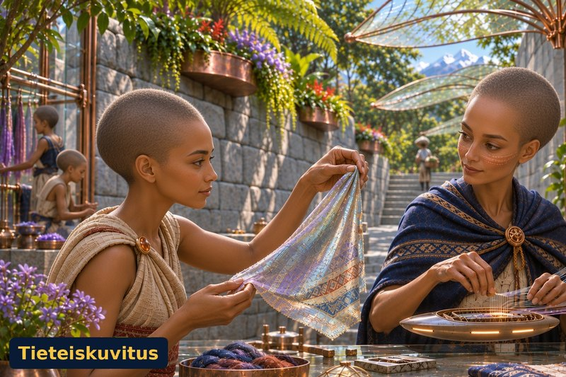
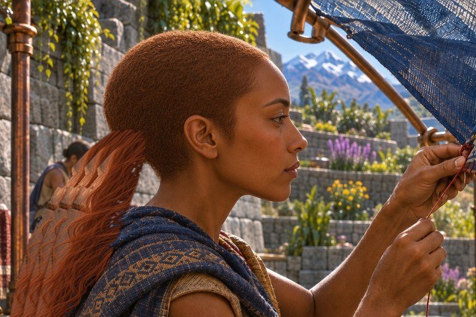

وجوه المدينة الحجرية
الخيال الرسومات الذكية لمدينة حجرية خيالية كل زوج يظهر أولاً مادة جاني كوربي المصدر ثم توضيح الذكاء الاصطناعي مستوحى من ملامح الجمجمة. معظم المواد المصدرة هي صور من بيرو. يتم تجميع الزوج 02 من صور الفيديو الثابتة ، والزوجات 12–13 تشمل إطارات فيديو من منحوتات القاهرة. المدينة الحجرية وسكانها مخترعين
يوم في مدينة الحجر (خيال)
هذه القصة مخترعة لا يصف تاريخ بيرو أو مصر، ولا علاقة لشخصياتها بالأشخاص المتوفين الذين يظهرون في الصور. تربط القصة التمثيلات الثلاثة عشر معًا على أنها أحداث يوم خيالي واحد.
المدينة الحجرية مبنية على شرفات على جانب جبل. القنوات تجلب المياه من الينابيع أعلى المنحدرات، والشظايا الزجاجية تضيء الزقاقات. كل شيء في المدينة يقاس: مفاصل الحجارة، ارتفاع المياه وزاوية الضوء. القياس لغة مشتركة هنا.
ثلاثة أشخاص في مركز اليوم يطحن (إلون) العيّن المنظار الذي يستخدمه المساحون في المدينة لقراءة الزوايا (سافا) حارس المياه يتأكد من أن كل شرفة تحصل على دورها من المياه النسّاج تيرو يصنع أغطية ظلّ تحمي السوق والحدائق من أشعة الشمس في الظهر.
في الصباح يلاحظ سافا أن القليل جدا من المياه تصل إلى أدنى التراسات. الخطأ يمكن أن يكون في منحدر قناة، مرفق مكسور أو قفل. خلال اليوم تبحث المدينة عن العيب معاً: يقوم حجر بتفقد المفاصل، ويقرأ بستاني علامات الجفاف في النباتات، ويحضر البناة قماش زجاجي جديد على المكان الذي تقسم فيه المياه. في السوق يتداول الناس الذرة والسلال والاخبار.
في المساء يتدفق الماء مرة أخرى. تيرو يصلح حافة قماش الظل، ومقياس القناة يضع آخر قفل. الأشكال تأتي من صور جاني، الأحداث والأسماء والشخصيات مخترعة.
01 · صانع النظارات يضبط منشورًا


قصة (خيال): الصباح يبدأ في ورشة قياس (إيلون) تقوم بتحويل البريزمة حتى يصل شعاع الضوء إلى هدفها ستقرأ سافا في وقت لاحق زوايا القناة بنفس المنظار، لذلك يجب أن يتم العمل قبل طلوع الشمس على التراسات.
نقطة البداية: كان عرض الجبهة والمسافة بين فتحات العين تؤدي إلى شكل الجزء العلوي من الوجه. الفك والفم هي خيارات الرسام
الصورة الأصلية 01 والملاحظات · قد يُظهر الزوجان 04 و10 القطعة نفسها الظاهرة في هذا الزوج.
اقرأ المزيد عن الصفحة واعرض الأزواج الـ13 كلها
الصفحة مبنية على فكرة جاني عن مجتمع متقدم وخيالي سبق البشر الجمجمات في الصور المصدر هي بقايا بشرية. في مادة باراكاس التي تم دراستها ، تم تفسير الرأس الطويل على أنه تشكيل تم في الطفولة ؛ لم يتم تأكيد التفاصيل الفردية للجماجم الخاصة التي التقطها جاني. المدينة الحجرية وسكانها مخترعين الجمجمات الموجودة في الصور المصدرة هي رفات بشرية لا يعرف أصلها وتاريخ جمعها إلا جزئياً (انظر صفحة الحقائق). هذا هو السبب في أن الرسوم التوضيحية لا تصور هؤلاء الناس، والصور الجمجمة بمثابة نقطة انطلاق فقط للأشكال. أداة الذكاء الاصطناعي المستخدمة في الرسوم التوضيحية لم تسجل في بيانات الصورة. الشعر المموج الأحمر النحاسي، الجزء العلوي من الجمجمة والجزء الخلفي من الرأس، العيون الكبيرة والذقن والأنف الصغيرة هي خيارات فنية مستوحاة من فن أمارنا. التوضيح ليس إعادة بناء الوجه، ولا نتيجة بحث عن لون العين أو الشعر.
كل زوج يظهر أولا صورة جاني و بجانبه أو تحتها صورة AI مستوحاة من ملامح الجمجمة، وهذا هو الخيال. الرقم يربط الصورة المصدر والرسومات. الفك السفلي غالبا ما يفتقر إلى الصور المصدر، لذلك الفك والفم هي قرارات الرسام. تعابير الشخصيات، لون البشرة، الشعر والحياة اليومية تنتمي إلى المدينة الحجرية. لا يمكن أن تخبرنا الصورة عن ملامح الوجه أو الأنواع أو مظهر المتوفى
ماذا تخبرنا الجماجم؟صفحة الحقائق: الصور 01–11، وبطاقات المعارض، والأبحاث المنشورة.
02 · حمولة حجارة تمرّ في الزقاق


قصة (خيال): يتحرك حمولة من الحجارة على طول زقاق ضيق نحو أدنى شرفة السائق يعرف فقط أن الكتل الجديدة مطلوبة لحافة القناة قبل المساء. لا أحد يعرف بعد أين الخطأ.
نقطة البداية: جبهة الشكل ترتفع بشكل مستقيم النموذج كان جمجمة شاحبة في الصف العلوي من مجموعة الفيديو.
03 · قاطع الحجارة يتفقّد وصلة


قصة (خيال): حجر يدرس مرفق قديم من القناة من خلال عدسة. المجمع سليم. أرسلت كلمة إلى سافا: الخطأ ليس في الحجر ولكن في مكان أعلى.
نقطة البداية: في الرؤية الجانبية الملتفتة إلى اليمين، الشكل الأكثر أهمية هو الخط من الجبهة إلى الجزء الخلفي المنحني للخلف من الرأس.
04 · البستاني يفحص قرن بذور


قصة (خيال): على أدنى شرفة يفتح بستان بذر ويرى أنه جف مبكراً جداً. يقول أن كمية المياه تقل منذ عدة أيام
نقطة البداية: الشكل الدائري للصورة 01 يتكرر في الوجه العلوي. تساعد اليدين في الحكم على نسبة الصورة المصدر.
الصورة الأصلية 04 والملاحظات · قد يُظهر الزوجان 01 و10 القطعة نفسها الظاهرة في هذا الزوج.
05 · المشرفة على المياه تقيس مناسيب القناة


قصة (خيال): صافا يضع جهاز تسوية على حافة القناة ويقيس اختلافات الارتفاع نقطة بعد نقطة. القياس يظهر أن الممر ينحدر في الاتجاه الصحيح. لذا يجب أن يكون الخطأ في نقطة التقسيم أو في قفل
نقطة البداية: نقطة البداية كانت الصورة اليسرى للجمجمة في المقدمة إن منحنى مؤخرة الرأس يستمر خلف الأذن
06 · النسّاجون يفحصون قطعة قماش



قصة (خيال): النسّاقون يحملون قطعة قماش رقيقة إلى الضوء. تيرو يحتاج إلى قطعة قماش مظللة فوق نقطة التقسيم حتى لا يتبخر الماء في حرارة الظهر. يجب أن تكون القماش خفيفة ولكن كثيفة.
نقطة البداية: تاج الجمجمة اليسرى ينحدر للخلف ملامح اليد اليمنى ترتفع بشكل أعلى
07 · لقاء في سوق الذرة


قصة (خيال): في سوق الذرة ثلاثة من سكان المدينة يتداولون السلع والأخبار. إشاعة عن نقص المياه كانت تدور طوال الصباح السوق يوافق على أن البنائين سيأخذون غطاء زجاجي جديد إلى نقطة التقسيم.
نقطة البداية: الزوايا الثلاث أعطت فكرة ثلاثة خطوط مختلفة للوجه. شخصية السوق المتوسطة تتصور كبالغ.
08 · مظلة زجاجية تُنقل عبر البوابة


قصة (خيال): اثنان من البناة يحملان غطاء زجاجي منحني عبر البوابة. إنها ثقيلة و هشة، لذا يذهبون ببطء و ينظرون إلى بعضهم في كل خطوة.
نقطة البداية: الشكل الأكثر استقامة للجمجمة اليسرى وخط الجبهة الأكثر ليونة من اليمين يمكن رؤيته بشكل أفضل من خلال مقارنة الجانبين.
09 · أغنية الناعورة


قصة (خيال): عجلة المياه تبدو خاطئة (سافا) ومساعدها يستمعون إليه ويجدون بوابة عالقة عند نقطة التقسيم. عندما تتحرر البوابة، يتغير صوت العجلة ويبدأ الماء بالتحرك.
نقطة البداية: المنحدر المختلف لرؤوس اليسار واليمين يعطي وجوه لسكانين ينحنيان فوق عجلة الماء.
10 · عازف الناي في زقاق حجري


قصة (خيال): عندما يتدفق المياه مرة أخرى، يغادر إيلون ورشة عمله ويعزف إشارة على الناي في الزقاق، واحدة يعرفها المنحدر بأكمله. الطوابق العليا تجيب بنفس النغمة
نقطة البداية: الرؤية الجانبية تظهر التاج المستدير وحافة فتحة العين. يتم تخيل شكل شفتي اللاعب والفك.
الصورة الأصلية 10 والملاحظات · قد يُظهر الزوجان 01 و04 القطعة نفسها الظاهرة في هذا الزوج.
11 · تبادل السلال في مدينة المدرّجات


قصة (خيال): في الشاطئ يتبادل الناس السلال يقوم البستاني بإرسال أول النباتات المنقذة إلى السوق، وتعود الفاكهة من الشرفة المجاورة.
نقطة البداية: العديد من الخطوط العريضة في علبة العرض أدت إلى رؤية المدينة. السكان في المقدمة تم تصميمهم لهذا المشهد
12 · النسّاجة ترتق قماش مظلة

انظر إلى انحناء أعلى الرأس وخط الجبهة ومدى امتداد مؤخرة الرأس. لا يمكن مقارنة النِّسب بدقة بين صور التُقطت من اتجاهات مختلفة. وفي الأسفل تفسير الرسّام.


قصة (خيال): مع حلول المساء، تيرو يصلح حافة قماش الظل. لقد كانت تحمي نقطة التقسيم طوال فترة الظهيرة والرياح مزقت ثقبًا صغيرًا في زاويتها إنها تسحب الخيط قبل حلول الظلام
13 · قيّاس القناة يضبط بوابة السدّ

انظر إلى انحناء أعلى الرأس وخط الجبهة ومدى امتداد مؤخرة الرأس. لا يمكن مقارنة النِّسب بدقة بين صور التُقطت من اتجاهات مختلفة. وفي الأسفل تفسير الرسّام.

قصة (خيال): أخيرًا، يحدد مقياس القناة الفتحة ليلاً ويسجل قياسات اليوم لـ (سافا). في الصباح سيقوم بريزما إيلون بفحص ما إذا كانت الزوايا ستستمر طوال الليل.
وجوه القاهرة الحجرية وجماجم بيرو
رؤوس العمارنة منحوتات، وتصف المتاحف أعلى الرأس المستطيل بأنه سمة أسلوبية في فن العمارنة (Global Egyptian Museum, JE 44869 · المتحف المصري، برلين، ÄM 14145). أما جماجم بيرو فرفات بشرية؛ وفي مادة Paracas المدروسة فُسّر الرأس الطويل بأنه تشكيل جرى في الطفولة (الخلفية البحثية). الصلة بينهما بصرية فقط.
يضع الزوجان 12 و13 الرؤوس الحجرية التي صوّرها Jani في المتحف المصري بالقاهرة في 15 فبراير 2024 بجانب صور جماجم بيرو وشخصيات المدينة الحجرية. الصور الأصلية من القاهرة أجزاء مقتطعة من لقطات ثابتة من فيديو Jani (جولة في المتحف من 51:31). طُمست وجوه المارة. صور القاهرة وخلفيتها البحثية موجودة أيضًا في صفحة الحقائق: القاهرة 2024.
لا يمكن قراءة أرقام القطع في إطارات Jani، لذا فسجل القطعة في المتحف نقطة مقارنة لا تحديدٌ للهوية. تضم مجموعة المتحف المصري بالقاهرة رأس الكوارتزيت JE 44869 الذي عُثر عليه في تل العمارنة، وهو بحسب Global Egyptian Museum يمثّل على الأرجح ميريت آتون، كبرى بنات إخناتون. نقّبت عنه الجمعية الألمانية Deutsche Orient-Gesellschaft عام 1912 في ورشة النحّات تحتمس (Global Egyptian Museum). ويوجد وجه حجري لأميرة من العمارنة من النوع نفسه في نيويورك أيضًا (The Met, Head of a princess from a group statue). سجل القطعة الخاص بمتحف القاهرة: Head of Princess, daughter of Akhenaten.
العرض نفسه في الفيديو البيروفي

الميزة المشتركة تساعد على تحديد العرض. موقع العثور الدقيق و هوية الأشياء في العرض لا يزال مفتوحا. الصورة 09 على صفحة الحقائق.
مثال آخر من العمارنة: نقش العائلة في برلين

يُظهر نقش العائلة في برلين كيف صُوّرت الملامح الجانبية للأسرة المالكة أيضًا منحوتةً في سطح حجري مستوٍ. تمتد قمم رؤوس البنات إلى الخلف. وبحسب المتحف، فإن هذه السمة أسلوب فني خالص وليست علامة على شكل وراثي أو مُحدث عمدًا (وصف المتحف للنقش).
تعابير الشخصيات ولون بشرتها وشعرها وحياتها اليومية تنتمي إلى المدينة الحجرية المتخيَّلة. تُظهر بعض الصور القطعة نفسها من اتجاهات مختلفة.